01 / 06 — Coworking / Espace culturel
Le RefugeIntellectuel
Un coworking littéraire qui fait passer la conversation au silence.
01 — Concept
Le Refuge Intellectuel est un coworking spécialisé implanté dans la gare Rabat Agdal, pensé pour les étudiants et chercheurs en littérature et arts. Inspiré des salons littéraires et des bibliothèques anciennes, il organise l'espace en une gradation du bruit vers le calme : accueil social, zone collaborative, puis alcôves individuelles silencieuses. Une palette verte restauratrice, des matériaux nobles et un mobilier sur mesure transforment un lieu de transit en sanctuaire de production intellectuelle.
Le plan suit un gradient d'intimité : d'un côté l'espace actif et social — accueil, comptoir, café — de l'autre les alcôves silencieuses. L'organisation se lit en trois temps : actif, semi-collectif, silencieux.
La palette matérielle renforce cette intention : bois (sombre ou miel), pierre, céramique, métal patiné et enduits mats créent une atmosphère plus chaude que le mobilier standard de bureau. Les références historiques fortes vont vers le bois sombre ou miel, les tons minéraux, les verts sourds.
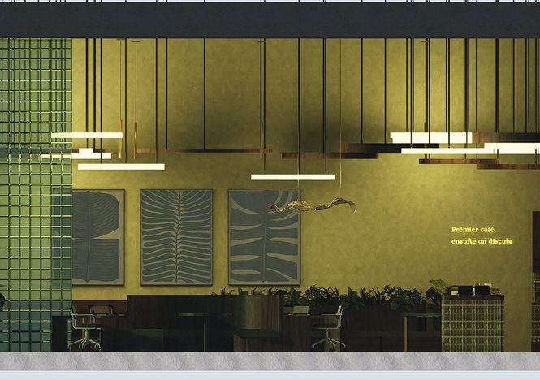
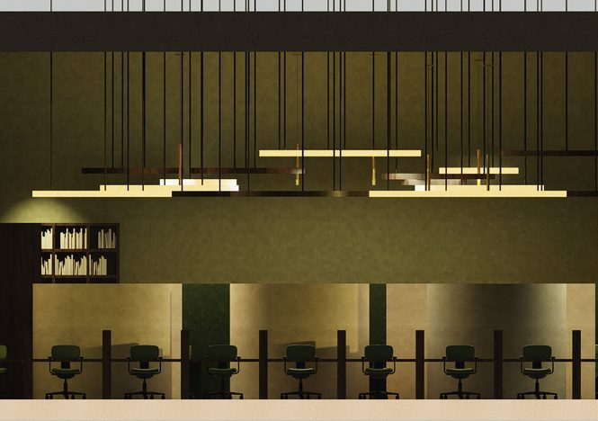
Concept & moodboard
Ce projet de coworking littéraire, destiné aux étudiants et chercheurs en littérature et arts, crée un environnement calme et inspirant au sein de la gare Rabat Agdal. Inspiré de la bibliothèque contemporaine, il propose une gradation spatiale favorisant la concentration, la lecture et les échanges.
Le concept s’appuie sur trois références principales : les salons littéraires pour la discussion et le partage, les bibliothèques anciennes avec leurs murs de livres continus, et les ateliers d’artistes à travers de grands espaces de travail collectif et des matériaux authentiques. Le projet réunit ainsi lecture, recherche et création dans un cadre contemporain et convivial.
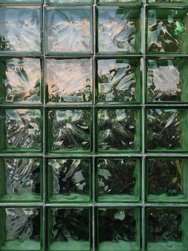
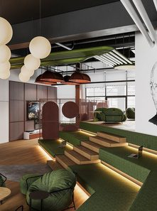
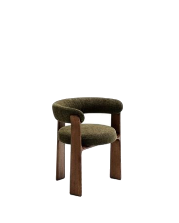
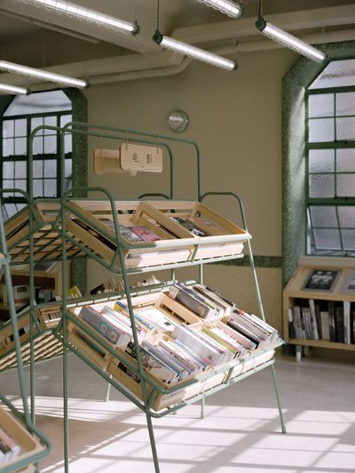
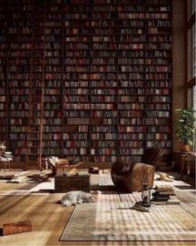
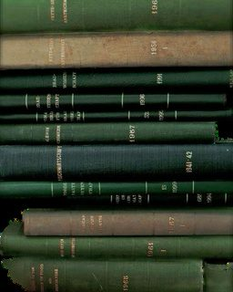
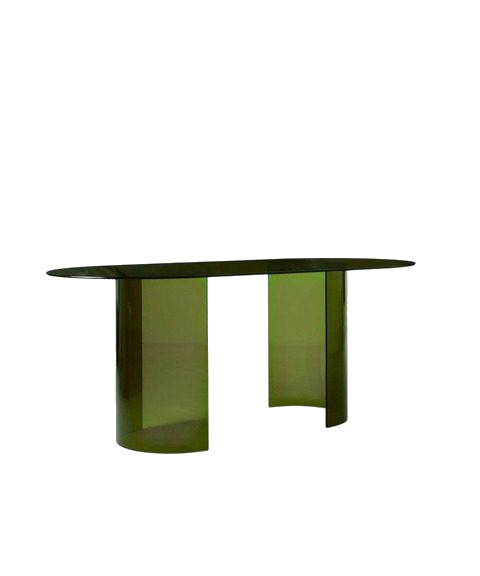
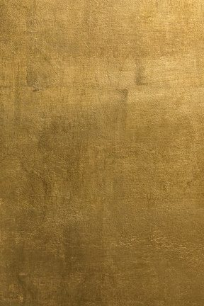
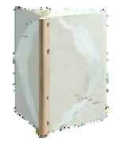
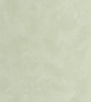
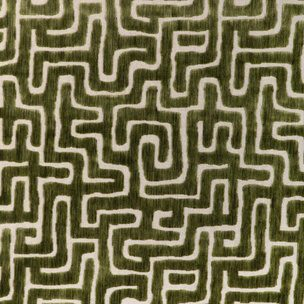
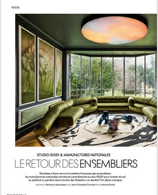
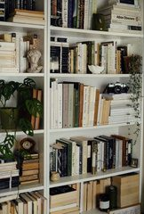
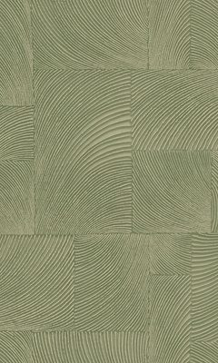
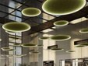

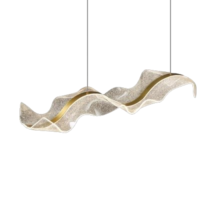
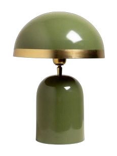
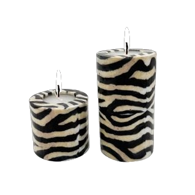
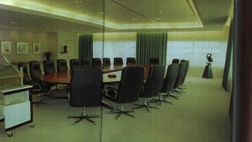
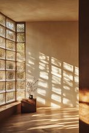
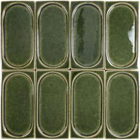
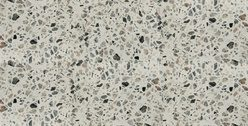
LE REFUGE INTELLECTUEL
Ce projet de coworking littéraire, destiné aux étudiants et chercheurs en littérature et arts, crée un environnement calme et inspirant au sein de la gare Rabat Agdal. Inspiré de la bibliothèque contemporaine, il propose une gradation spatiale favorisant la concentration, la lecture et les échanges.
Organisation des espaces & plan d’aménagement
Le projet repose sur une hiérarchie des espaces claire (Actif → Semi-collectif → Silencieux et individuel). La zone proche de l’entrée est la plus sociale (accueil, coin café), puis l’espace s’enfonce progressivement vers des zones de travail collaboratif et enfin vers des îlots individuels très protégés. Des claustras, bibliothèques basses, végétation et cloisons courbes en BA13 assurent le contrôle du champ visuel et des interférences acoustiques tout en maintenant une fluidité visuelle.
Le plan suit un gradient d’intimité : de l’accueil public, au centre de la façade, vers les espaces les plus retirés. Le coin café et la zone de travail collective forment le cœur vivant du projet, desservis par une circulation unique qui traverse le plateau sans traverser les zones de concentration. À gauche, l’espace individuel, protégé par des blocs de verre, réunit bureaux privés, alcôves et cabinets de lecture ; à droite, l’espace modulable en gradins et les salles de réunion complètent le programme.
Le vocabulaire matériel — bibliothèques murales, bois et végétation — unifie l’ensemble du refuge.
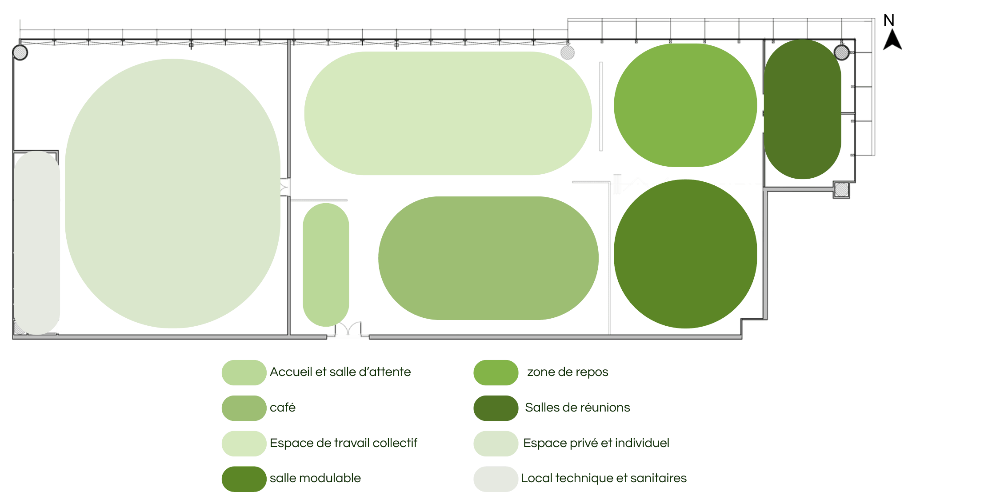
La hiérarchie Actif → Semi-collectif → Silencieux et individuel, figurée par les volumes colorés : accueil et salle d’attente, café, espace de travail collectif, salle modulable, zone de repos, salles de réunions, espace privé et individuel, local technique et sanitaires.
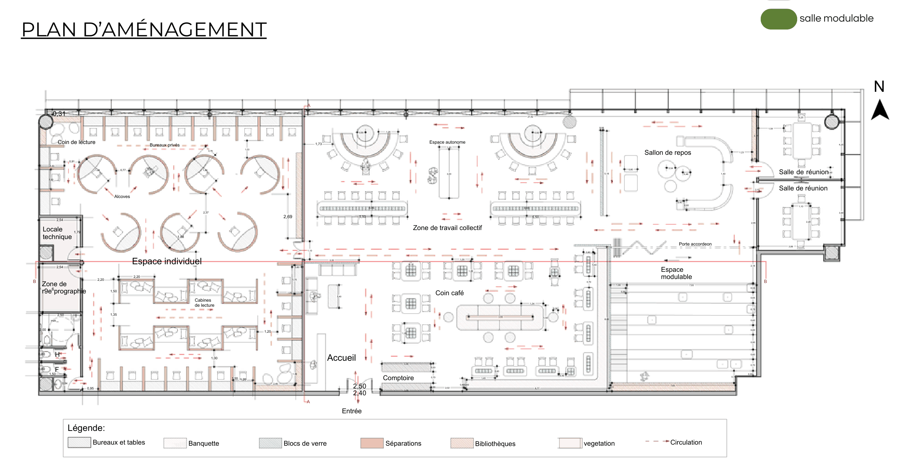
Implantation générale : comptoir d’accueil, tables rondes, banquettes, îlots de travail, bibliothèque murale, vegetation et cheminements de circulation dessinés en rouge.
Légende du plan
- Accueil
- Café
- Espace de travail collectif
- Salle modulable
- Salles de réunions
- Espace privé et individuel
- Local technique et sanitaires
- Coin de lecture
- Bureaux et tables
- Banquette
- Blocs de verre
- Séparations
- Entrée
- Comptoir
- Bibliothèques
- Végétation
- Salon de repos
- Espace modulable
- Circulation
- Zone de reprographie
- Locale technique
Plans techniques
Cinq revêtements de sol distincts structurent les ambiances : le terrazzo Blue Gum poli pour l’accueil et le coin café, le béton ciré pour les circulations, la moquette beige nacre Dolce pour les espaces de concentration, le Gerflor aspect noyer pour les zones de lecture, et le grès cérame rectifié pour les locaux techniques.
Six types de menuiseries sont définis selon l’usage : une porte double battante vitrée en MDF placage noyer pour l’entrée, des portes simples vitrées pour les bureaux et salles de réunion, et une porte accordéon à neuf panneaux repliables pour l’espace modulable.
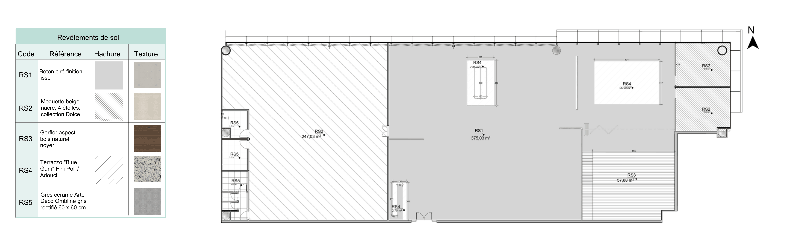
Chaque finition est repérée sur le plan par son code RS et sa surface : RS1 béton ciré sur la grande zone centrale, RS2 moquette sur la zone de travail et les bureaux nord-est, RS3 Gerflor au sud-est, RS4 terrazzo à l’entrée et sur l’îlot central, RS5 grès cérame dans les locaux de la façade ouest.
| Code | Référence | Texture | Zone d’application |
|---|---|---|---|
| RS1 | Béton ciré — finition lisse | Béton ciré finition lisse | Grande zone centrale — circulations et accueil |
| RS2 | Moquette beige nacre, 4 étoiles, collection Dolce | Moquette beige nacre | Zone de travail collectif et bureaux nord-est |
| RS3 | Gerflor, aspect bois naturel noyer | Gerflor aspect bois naturel noyer | Secteur sud-est — zones de lecture |
| RS4 | Terrazzo “Blue Gum” — fini poli / adouci | Terrazzo Blue Gum fini poli | Entrée, comptoir d’accueil et îlot central |
| RS5 | Grès cérame Arte Deco Ombline gris, rectifié 60 × 60 cm | Grès cérame Arte Deco Ombline gris | Locaux techniques de la façade ouest |
Sur le plan de référence, chaque zone porte son code RS et sa surface : RS1 375,03 m², RS2 247,03 m², RS3 57,68 m², RS4 25,99 m² (plus 7,85 m² et 2,75 m²), RS5 pour les trois locaux de la façade ouest.
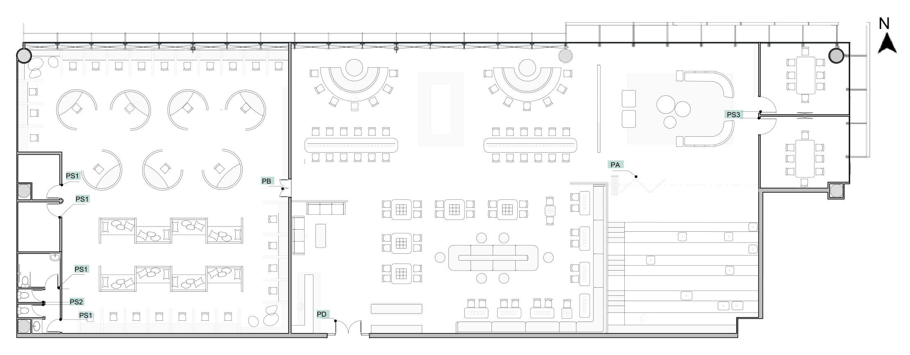
Plan de coordination des portes : chaque ouverture est repérée par son code de nomenclature, reporté dans le tableau des portes ci-dessous.
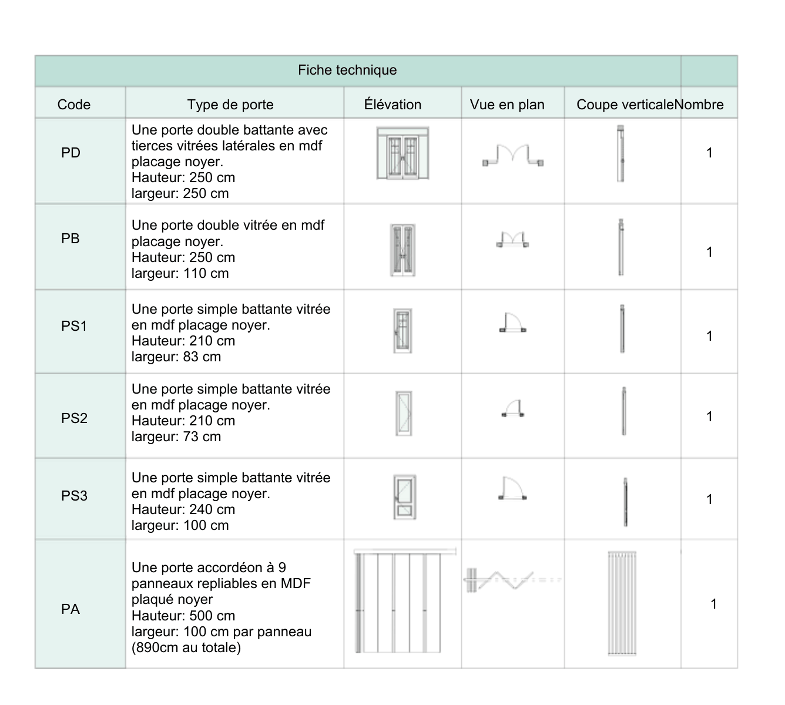
Chaque type de porte est documenté en élévation, en vue en plan et en coupe verticale, avec ses dimensions et son nombre d’exemplaires.
| Code | Type de porte | Dimensions | Nombre |
|---|---|---|---|
| PD | Porte double battante à tierces vitrées latérales, MDF placage noyer | H. 250 cm × L. 250 cm | 1 |
| PA | Porte double vitrée, MDF placage noyer | H. 250 cm × L. 110 cm | 1 |
| PB | Porte simple battante vitrée, MDF placage noyer | H. 210 cm × L. 83 cm | 1 |
| PS1 | Porte simple battante vitrée, MDF placage noyer | H. 210 cm × L. 73 cm | 1 |
| PS2 | Porte simple battante vitrée, MDF placage noyer | H. 240 cm × L. 100 cm | 1 |
| PS3 | Porte accordéon à 9 panneaux repliables, MDF plaqué noyer | H. 500 cm × L. 100 cm par panneau (890 cm au total) | 1 |
La porte double battante PD dessert l’entrée ; la porte accordéon PS3 ouvre l’espace modulable et permet de le faire passer en configuration libre.
04 — Contact